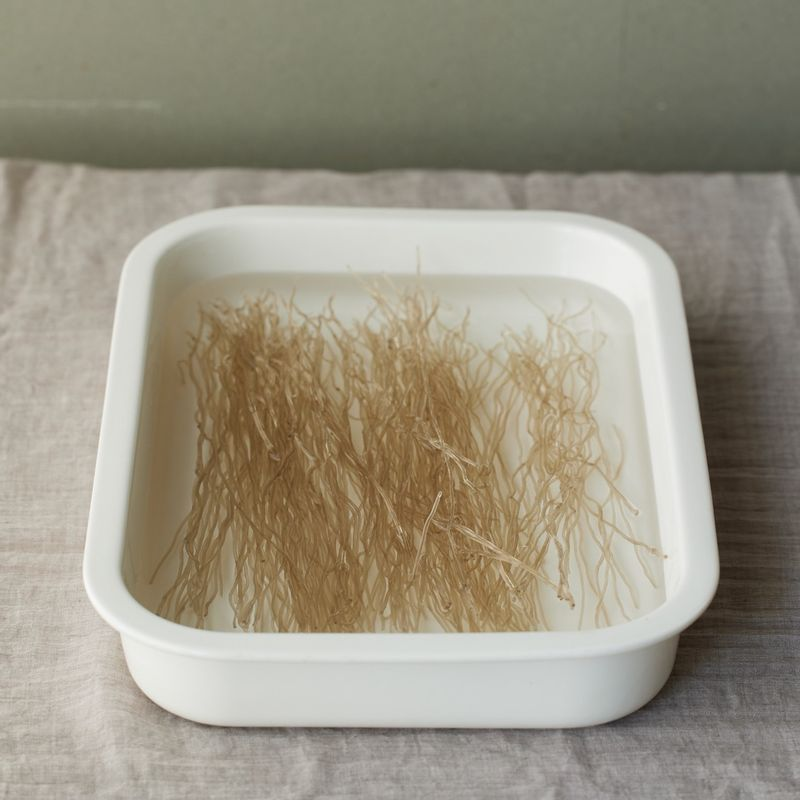
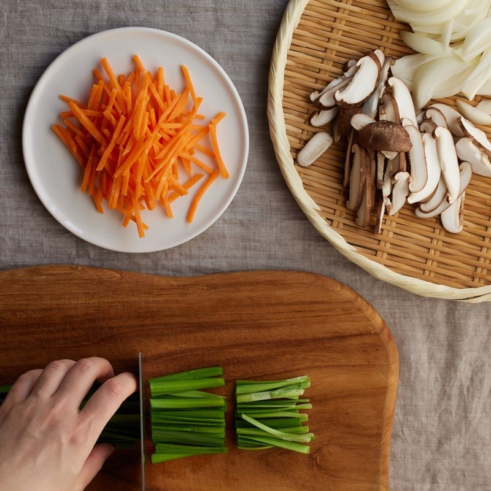
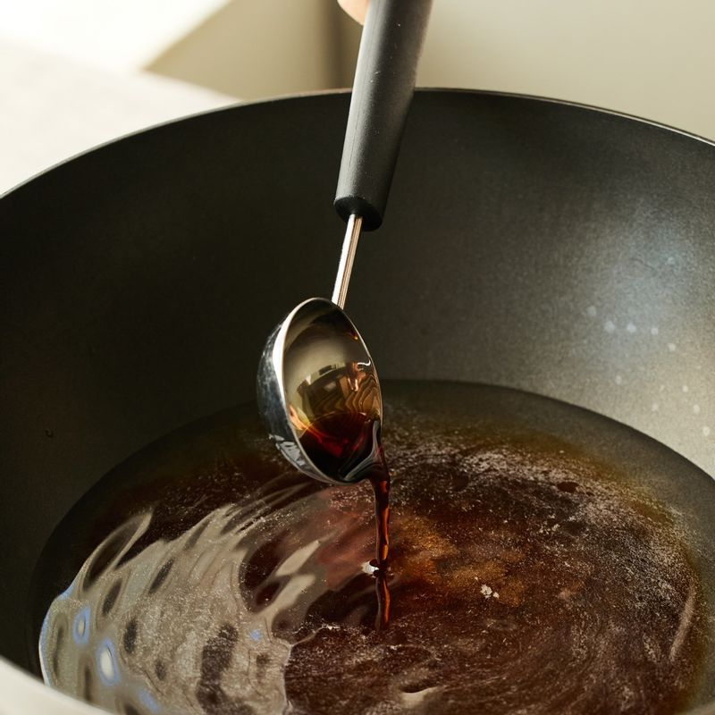
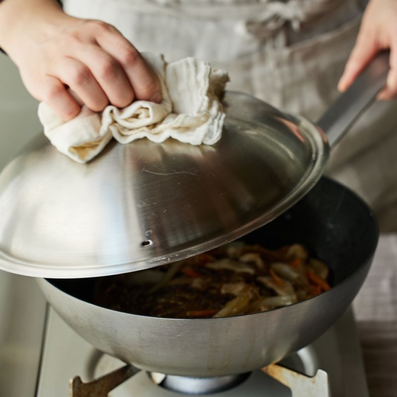

-

건당면은 찬물에 담가 30분정도 불려주세요.
-

당근, 표고, 양파는 채를 썰고, 부추는 5cm 길이로 썰어주세요.
-

냄비에 양념 재료를 넣고 중불에서 끓이다가 설탕이 녹으면 불린 당면과 돼지고기, 표고버섯을 넣고 후추를 뿌려 2~3분간 끓여주세요.
-

당면이 반 이상 익었을때 양파와 당근을 넣고 섞은 후 뚜껑을 덮어 3분간 익혀주세요. 불을 끄고 부추와 통깨와 참기름을 넣어 가볍게 섞어주세요.
-
완성된 잡채를 접시에 담아 맛있게 즐겨주세요.